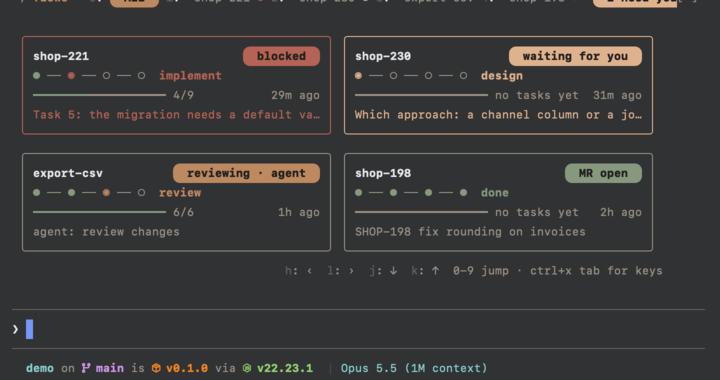
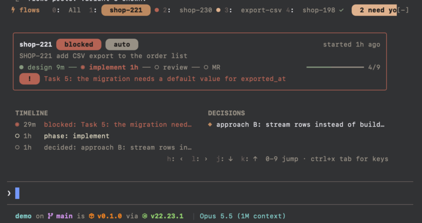

flows/hooks/board.ts
newpureResponsibility: turns flow status --json output into the model the band draws.
Collaborators: types only. shortDuration mirrors relativeAge in plan-progress/hooks/pane.ts:66 (copied: a mod cannot import another).
design-code / phase 3 - piece 3 of 6: the board viewer mod
flows: a tabbed board above the promptA new mod, flows, draws the board in the band above the prompt, not in a pane: a tab row (All plus one tab per flow), an overview of every flow on All, and a compact detail on a flow's tab. It runs flow status --json every 2 s while shown, turns the board into a band model in a pure module, and draws it with Buttons so digits, vim keys and the engine's focus ring do the navigation.
Box has no flexBasis (whole-percent width instead); the title and pills keep their width with flexShrink={0}.Real Claude Code 2.1.299 with the prototype mod, your Noctalia theme, a narrow 99-column window. Everything is theme keys, so /theme recolours it. Rounded pill ends are Nerd Font glyphs (U+E0B6, U+E0B4).

0): one card per flow
1)All and one tab per flow; the active tab is a filled claude pill, the rest dim text with a state mark (● in the state tone for flows that need you, ✓ done). A warning pill on the right counts flows that need you ("2 need you", just "2" below 110 columns).inactive otherwise; 3 columns from 120 columns, 2 from 78, else 1. Each card: name and a state pill; a phase rail ● ── ● ── ◉ ── ○ with the current phase named; a task bar with count and age; one line: the blocker, or the agent's task, or the request.! or ? pill. Under it TIMELINE (newest first, ◉ for the latest, 3 rows, j/k scroll) and DECISIONS (last 3, ◆) side by side.success, current in the state tone (claude, warning, error), open inactive. State pills: working/delegated claude, waiting warning, blocked and not responding error, done success, ended subtle; text inverseText.h ‹ l › j ↓ k ↑ · 0-9 jump · ctrl+x tab for keys.board.ts and navigation.ts are pure and tested from plain boards; register.tsx alone runs processes, holds atoms and draws, as plan-progress splits pane.ts from register.tsx. Manifest, hooks.json, README and CHANGELOG are new too.
Responsibility: turns flow status --json output into the model the band draws.
Collaborators: types only. shortDuration mirrors relativeAge in plan-progress/hooks/pane.ts:66 (copied: a mod cannot import another).
Responsibility: answers where a key press moves the person on the board.
Responsibility: wires the poll, the command and the band to the pure modules and draws the model.
Collaborators: board.ts, navigation.ts; $.process (flow, the browser opener), $.clock, $.store (remembered visibility), $.ui.focus. Settings from userConfig: flowPath. Module variable bandId is the band's requestId, kept from the last drawing for $.ui.focus.
New: hooks/browser.ts (a copy of merge-status/hooks/browser.ts: detectPlatform, openUrlArgv, with its tests), .claude-plugin/plugin.json (with types and userConfig.flowPath), hooks/hooks.json, README.md (requires flow and Claude Code 2.1.299+), CHANGELOG.md. Modified: .claude-plugin/marketplace.json gains flows; the root README.md lists it.
Board crosses flow -> stdout -> parseBoard (the core's --json contract v1, mirrored, read only). BandView, Navigation and the shown flag are atoms; only the shown flag is stored ($.store). BandModel crosses board.ts -> drawing and is never stored.
/flows and /flows shop-221register.tsx, atoms for what the drawing reads: plan-progress/hooks/pane.ts:105, register.tsx:31-33.session.start: plan-progress/hooks/register.tsx:24,209; toggle command: register.tsx:225.ui.render on AbovePrompt, passing with next(e) when hidden: skill-usage/hooks/register.tsx:113.merge-status/hooks/register.tsx:41-42; URL opener: merge-status/hooks/browser.ts:12 (copied).userConfig in plugin.json, read from options in register: merge-status/.claude-plugin/plugin.json, register.tsx:269.paddingX={1} root, every hook ends in .catch(($, e, next) => next(e)): plan-progress.Buttons and $.ui.focus; and it needs Claude Code 2.1.299+ (weight, underline), stated in the README.board.ts - unit from fixture boards (copied from real flow status --json): parse and version check, labels, tones, marks, segments per state, cards per width (3 / 2 / 1 columns), card line (blocker, agent task or request), pills and rail per state, detail (last 3 decisions, 3-entry timeline window with older count), +n past 9 flows.navigation.ts - unit: digits, wrap of h/l, clamps of j/k, g, reconcile after a flow vanishes.register.test.tsx - engine tests with a fake flow process (process.run hook) and mock.store: toggle and remembered visibility, refresh, mounted band text for both tabs, digit and letter presses, problems (missing, failed, v2), stacking with a band hook beneath, hidden during a survey.flow with the demo FLOW_HOME in a private tmux, keys pressed, screenshots of both tabs; plus flow report into a flow while the band is open.flow status --json every 2 s only while the band is shown; ages come from the board's now.flowPath (setting, default flow); a missing binary shows an install hint instead of the board.+n and are reached with l.j/k.o opens the flow's merge request in the browser; g goes to the top.All.flow binary; tested on the current version only.flows; /flows toggles the band, /flows <name> opens that flow's tab./flows, remembered across sessions ($.store).0-9 jump; with the band focused h/l tabs, j/k cards or timeline, Enter opens, g top, o merge request.